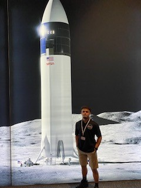

Computer Science student @ Berea College and previous NASA intern, with a strong interest and passion for security and software development—building secure, efficient, and human-centered systems.
Experience
Flight Software Development Intern — NASA Johnson Space Center
- Designed and developed a custom Graphical User Interface (GUI).
- Translated and optimized code from LabVIEW to Python for performance and compatibility.
- Engineered software for an exercise device intended for space deployment.
- Submitted an NTR (MSC-27772-1) as a NASA innovator.
Space Exploration Vehicle Software Intern — NASA Johnson Space Center
- Engineered and optimized rover software systems integrating hardware and software interfaces.
- Developed a custom Driver Station UI for intuitive mission control.
- Programmed Raspberry Pi and NVIDIA Jetson for real-time software deployment.
- Implemented controller-based rover mobility validation and telemetry tracking.
Information Systems & Services Tier 2 Manager — Berea College
- Diagnose and repair Dell hardware and software with certification-backed workflows.
- Deliver fast and reliable technical support to faculty, staff, and students.
- Manage system imaging, maintenance, and troubleshooting operations.
Projects
ISS Exercise System GUI — NASA Johnson Space Center
Developed a robust, astronaut-friendly GUI used on the International Space Station to support exercise equipment workflows, including safety checks, telemetry visibility, and fault diagnostics in microgravity.
Two-Factor Authentication System
Implemented secure login and account creation with Java-based 2FA. Designed for clarity, security, and scale.
uChariot Rover GUI
Built a Python GUI for real-time rover navigation with VR data mapping, enabling joystick control and autonomous pathing.
Résumé
Download my full résumé as a PDF:
Download Résumé